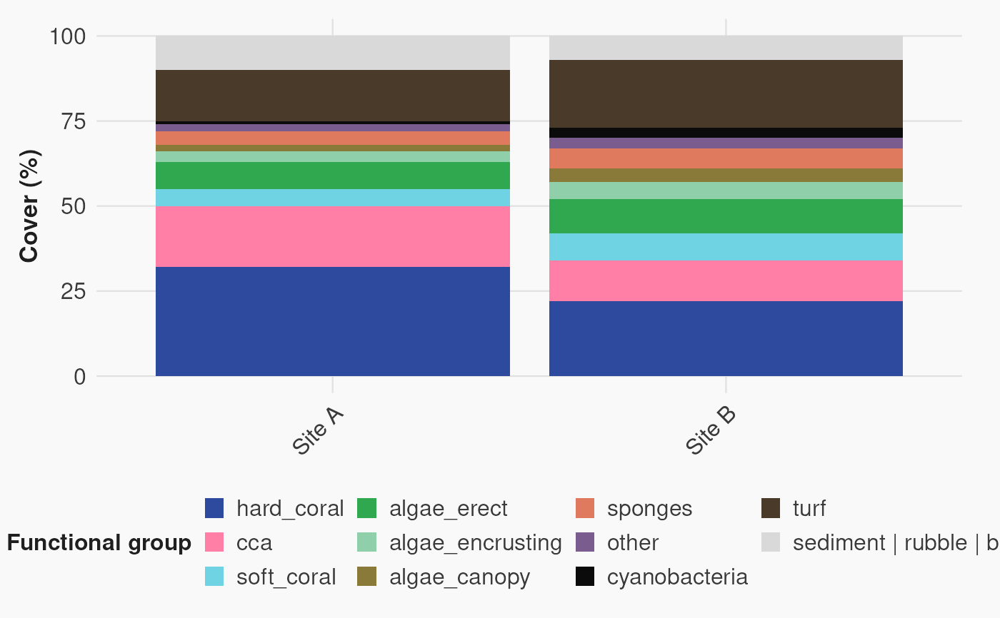
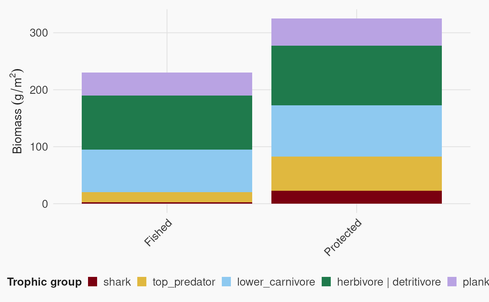

Convenience wrapper around ggplot2::scale_fill_manual() that pulls
colors from ps_colors().
Arguments
- palette
Character. Palette name passed to
ps_colors().- drop
Logical. Passed to
ggplot2::scale_color_manual(). DefaultFALSEto preserve palette order even if levels are unused.- ...
Additional arguments passed to
ggplot2::scale_color_manual().
See also
scale_color_ps() for color aesthetic, ps_colors() for raw palettes
Examples
library(ggplot2)
# Benthic cover composition (stacked bar) - all functional groups
benthic <- data.frame(site = rep(c("Site A", "Site B"), each = 11),
functional_group = factor(rep(c("hard_coral", "soft_coral", "cca", "turf",
"algae_erect", "algae_encrusting", "algae_canopy",
"sponges", "cyanobacteria", "other", "sediment | rubble | barren"), 2),
levels = rev(names(ps_colors("functional_groups")))),
cover = c(32, 5, 18, 15, 8, 3, 2, 4, 1, 2, 10, 22, 8, 12, 20, 10, 5, 4, 6, 3, 3, 7))
ggplot(benthic,
aes(x = site, y = cover, fill = functional_group)) +
geom_col(position = "stack") +
scale_fill_ps("functional_groups") +
labs(x = NULL, y = "Cover (%)", fill = "Functional group") +
theme_ps()

# Fish biomass by trophic group (stacked bar)
fish_trophic <- data.frame(site = rep(c("Protected", "Fished"), each = 5),
trophic_group = factor(rep(c("shark", "top_predator", "lower_carnivore",
"herbivore | detritivore", "planktivore"), 2),
levels = rev(names(ps_colors("trophic_group")))),
biomass = c(45, 120, 180, 210, 95, 5, 35, 150, 190, 80)/2)
ggplot(fish_trophic,
aes(x = site, y = biomass, fill = trophic_group)) +
geom_col(position = "stack") +
scale_fill_ps("trophic_group") +
labs(x = NULL, y = expression(Biomass~(g/m^2)), fill = "Trophic group") +
theme_ps()
